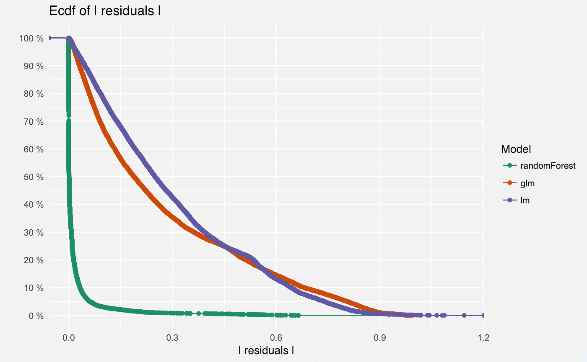
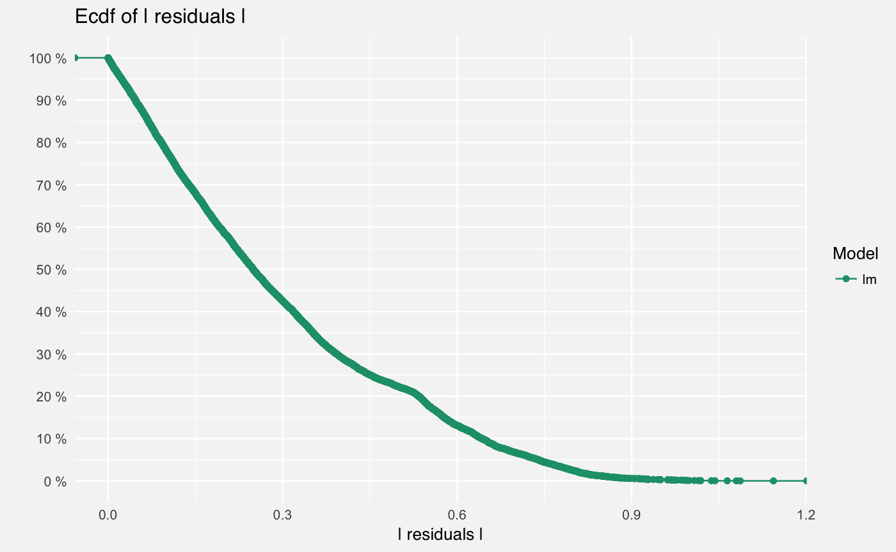

Model Performance Plots
Model Performance Plots
# S3 method for model_performance_explainer plot(x, ..., geom = "ecdf", lossFunction = function(x) sqrt(mean(x^2)))
Arguments
| x | a model to be explained, preprocessed by the 'explain' function |
|---|---|
| ... | other parameters |
| geom | either |
| lossFunction | A function that calculates the total loss for a model based on model residuals. By default it's the root mean square. |
Value
An object of the class 'model_performance_explainer'.
Examples
#\dontrun{ library("breakDown") library("randomForest") HR_rf_model <- randomForest(left~., data = breakDown::HR_data, ntree = 100)#> Warning: The response has five or fewer unique values. Are you sure you want to do regression?explainer_rf <- explain(HR_rf_model, data = HR_data, y = HR_data$left) mp_rf <- model_performance(explainer_rf) plot(mp_rf)HR_glm_model <- glm(left~., data = breakDown::HR_data, family = "binomial") explainer_glm <- explain(HR_glm_model, data = HR_data, y = HR_data$left, label = "glm", predict_function = function(m,x) predict.glm(m,x,type = "response")) mp_glm <- model_performance(explainer_glm) plot(mp_glm)HR_lm_model <- lm(left~., data = breakDown::HR_data) explainer_lm <- explain(HR_lm_model, data = HR_data, y = HR_data$left) mp_lm <- model_performance(explainer_lm) plot(mp_lm)plot(mp_rf, mp_glm, mp_lm)plot(mp_rf, mp_glm, mp_lm, geom = "boxplot")#}